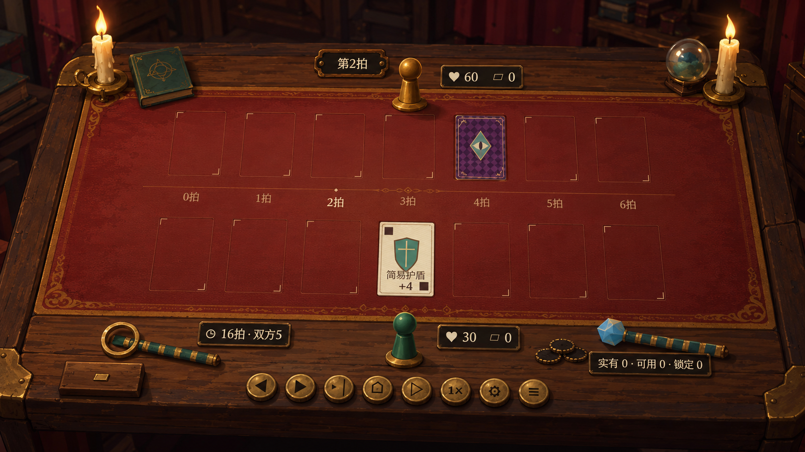
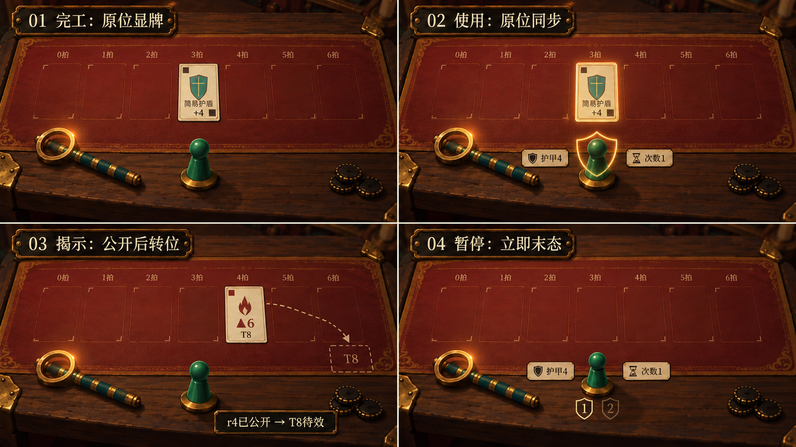
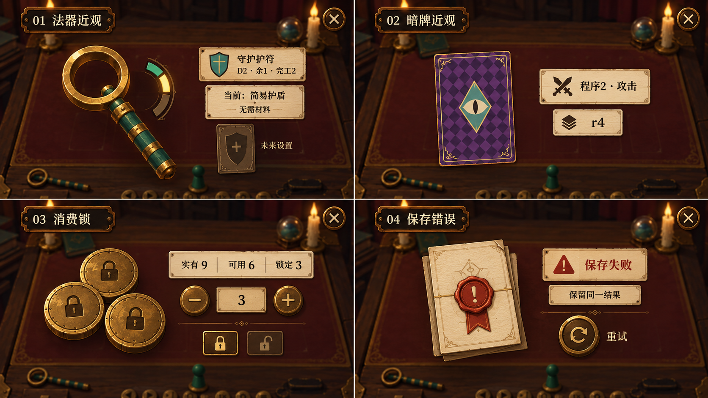
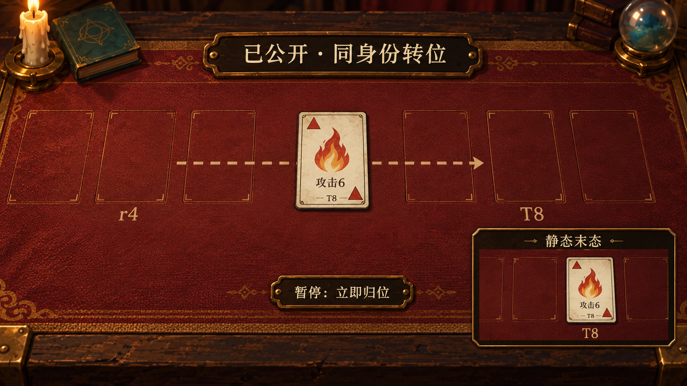
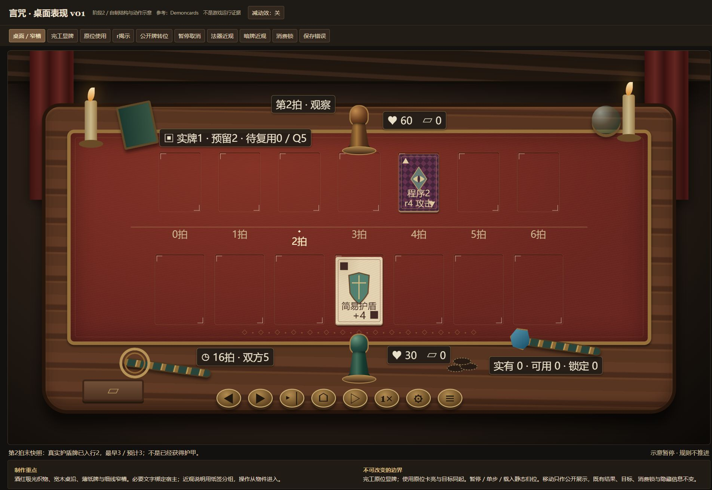
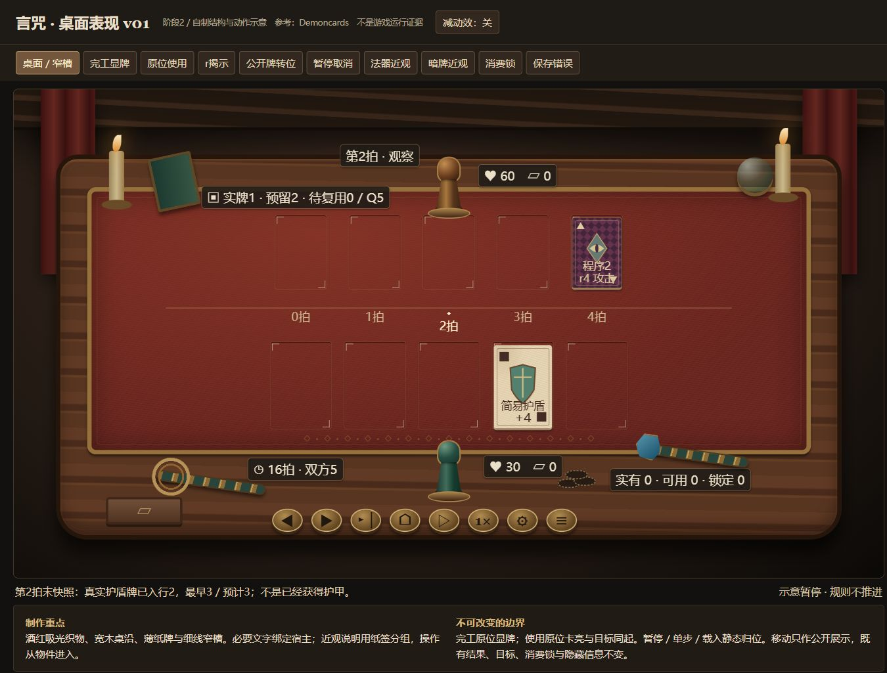

言咒 · Demoncards第一表现参照
2026-10-14 · DOC-025阶段3 · 内置imagegen生成的原创美术示意。不是Demoncards运行证据，也不是Godot实现。
文字结构与制作参数 · 可操作结构示意 · 复核与实现交接
规则字段和像素／世界尺寸以文字＋HTML为准。图中省略的字段不能在实现中删除；绘制透视不是模型单位依据。暂停、单步、读档静态归位；原位显牌／使用保持。已公开牌转位参考第4图。

01 桌面全景：酒红吸光织物、窄金饰边、宽木沿、薄纸及深暖背景。7列×2行是窗口，只有两张实际示例牌。图中容量、暗牌公开角标和相位略写，需按结构补齐；纸牌投影不能直接用于反推几何比例。
02 动作关系：法器亮后原位显牌，原位卡亮＋目标局部效果同起；暂停末态已移除离队护盾牌。本图第3格攻击牌角标残留■为生成错误，该格不作为类别／移动制作依据；正确攻击▲与移动关系以第4图和HTML为准。虚线仅是图解，不是游戏光束。首版错误及定向修改输出就地保全。
03 图形近观／系统页：全画幅暗化，物件悬浮而无矩形底板，字段绑定纸签。D2／余1／完工2、暗牌程序2／r4、9／6／3消费锁和保存重试可辨。未来设置标签有生成字形误差，实现用HTML准确文案；按钮语义和操作必须按规则补齐。
04 移动独立面板：仅已公开牌同身份展示转位，不扣血、不改序；攻击角标▲正确。右下是明确分隔的静态结果插图，不是第二张真实牌。暂停立即到真实T位；运行中不画虚线导引，不照搬手牌／拖动规则。两档结构证据

1920×1080浏览器视口，全页截图含审查工具栏；7列。不是Godot画布。
1366×768浏览器视口，全页截图含审查工具栏；5列。核心标签按实际投影检查。原参考文件保留E:/Game/Demoncards；未复制其原纹理或网格进运行包。统一AS／DM登记由总控维护。真实实现复核待总控提供固定运行证据。